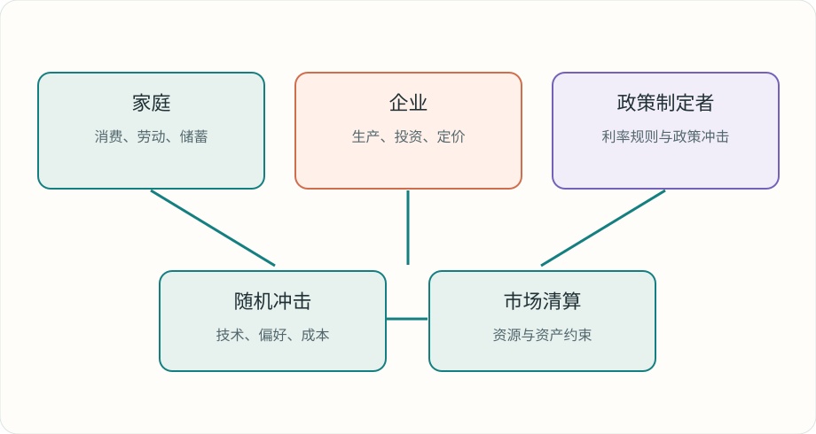
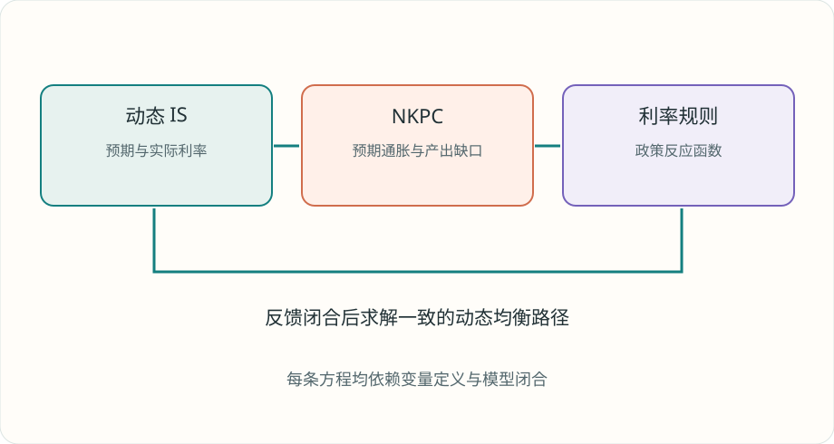
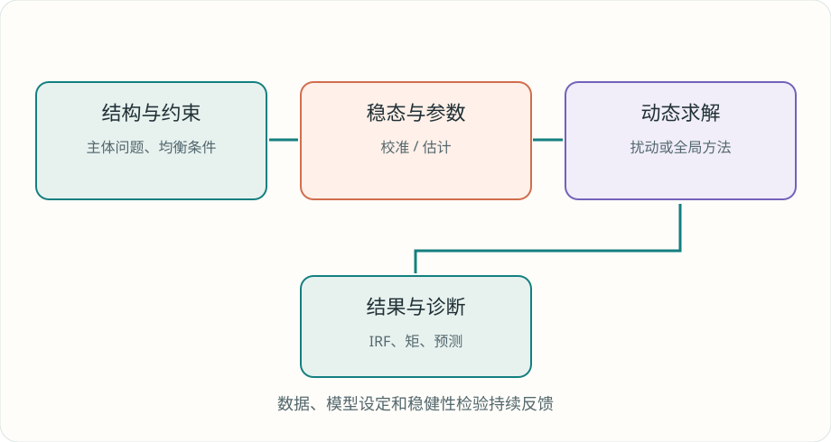
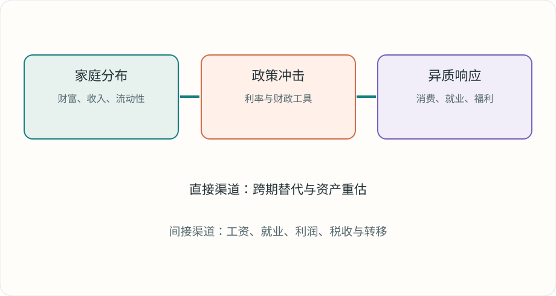

DSGE模型与现代方法
怎样把家庭、企业、央行和随机冲击写进同一个动态系统？从新凯恩斯三方程到 Dynare 求解，再到 HANK 的分布效应。
DSGE 是一种具体模型，还是一套建模框架？
DSGE 是动态、随机、一般均衡（Dynamic Stochastic General Equilibrium）的建模框架。动态表示家庭和企业跨期选择；随机表示技术、偏好、政策等扰动不可完全预知；一般均衡表示家庭、企业、政府、央行及市场约束彼此一致；均衡表示个体最优决策和市场清算条件共同成立。
DSGE 不是一组唯一固定的方程。RBC、带价格黏性的标准新凯恩斯模型、带金融摩擦的模型、开放经济模型和异质家庭模型，都可以采用 DSGE 的方法。一个模型是否有用，取决于它的机制是否与问题匹配、参数是否可识别、数据是否支持，以及结论对替代设定是否稳健。

新凯恩斯 DSGE 的三条核心方程如何联动？
最简线性新凯恩斯模型常用产出缺口 x_t、通胀 π_t 和名义政策利率 i_t 描述短期均衡。变量通常是围绕稳态或趋势的偏离，单位需要在模型中明确为对数点或百分点。
动态 IS 方程来自家庭的跨期 Euler 条件：当前产出缺口取决于预期未来产出缺口，以及实际利率相对自然利率的差异。
新凯恩斯菲利普斯曲线描述价格黏性下的通胀动态：
货币政策规则说明央行如何调整政策利率：
这三条方程不是三个彼此独立的经验相关式。预期影响当前消费和定价，当前通胀与产出又触发政策反应，政策利率再改变实际融资成本。完整模型还需要说明家庭预算约束、企业定价问题、资源约束、自然率过程和冲击过程。

模型如何从方程走到数据和脉冲响应？
建模通常先写出主体问题、约束和市场清算条件，再求稳态。随后研究者选择参数校准或使用数据估计参数，定义观测变量与模型变量之间的测量方程，最后求解随机动态系统并检查模型能否同时解释多项事实。

脉冲响应函数（IRF）表示给定某种冲击后，模型变量相对稳态或基准路径的动态偏离。读图时必须问：冲击是一个标准差还是单位冲击？横轴是季度还是年度？变量是水平、对数点还是百分点？IRF 是模型内生响应，不是自动识别出的历史因果效应。
Dynare 的 steady 可计算稳态；check 可检查局部解的特征根条件；stoch_simul 使用扰动近似求解随机模型，并计算 IRF 和矩。它默认围绕确定性稳态进行局部近似；存在强非线性或绑定约束时，可能需要扩展路径或其他全局方法。近似阶数、冲击协方差矩阵顺序和变量定义都会影响结果。
从家庭最优化到 Dynare：一个可复算的 RBC 基准
下面的例子是一个带劳动供给的 RBC 基准模型。家庭选择消费和劳动，企业在竞争市场下按边际产出支付工资和资本回报，资本按折旧率演化，技术冲击服从 AR(1)。模型不含货币、价格黏性、政府和金融摩擦，因此不能用于分析货币政策或金融危机。
家庭效用取对数消费与劳动不效用：(u(c,l)=\log c−ψl^{1+φ}/(1+φ))。消费 Euler 方程、劳动供给条件、企业要素价格、生产函数、资本积累、资源约束和技术冲击过程共同形成八条方程。下面的校准把稳态劳动设为 0.33，并据此选择 ψ；数值仅用于让模型有可复算的初始点。
// rbc_baseline.mod — deterministic calibration + first-order stochastic solution
var y c k invest l w r a;
varexo e_a;
parameters beta delta alpha rho sigma psi phi;
beta = 0.99;
delta = 0.025;
alpha = 0.33;
rho = 0.95;
sigma = 0.01;
phi = 1;
psi = 8.042774815172917;
model;
// Household Euler equation; r is the gross marginal product of capital.
1/c = beta*(1/c(+1))*(1 + r(+1) - delta);
// Intratemporal labor-supply condition for log utility in consumption.
psi*l^phi = w/c;
// Competitive firm factor prices and production.
w = (1-alpha)*y/l;
r = alpha*y/k(-1);
y = exp(a)*k(-1)^alpha*l^(1-alpha);
// Capital accumulation and goods-market resource constraint.
k = (1-delta)*k(-1) + invest;
y = c + invest;
// Exogenous technology process.
a = rho*a(-1) + e_a;
end;
initval;
y = 0.9950581438;
c = 0.7611836866;
k = 9.3549782901;
invest = 0.2338744573;
l = 0.33;
w = 2.0202695647;
r = 0.0351010101;
a = 0;
e_a = 0;
end;
steady;
check;
shocks;
var e_a;
stderr sigma;
end;
stoch_simul(order=1, irf=40) y c invest l k a;
获取完整 Dynare 模型文件（rbc_baseline.mod）。在已安装 Dynare 7.2、MATLAB 或 GNU Octave 的环境中，进入文件目录运行 dynare rbc_baseline.mod。代码使用数值稳态求解器，随后执行 check 和一阶随机模拟；本教程的网页验收不等于已在 Dynare 中执行这份模型，实际运行时应核对稳态残差、特征根和 IRF 输出。
为什么 HANK 模型重新引入家庭异质性？
代表性家庭模型把不同收入、财富、流动性约束和边际消费倾向压缩为一个“平均家庭”。但货币和财政政策会通过工资、就业、债券价格、按揭利率、资产负债表和转移支付影响不同家庭；财富较少、流动性约束更强的家庭，可能比富裕储蓄者更快调整消费。
异质性代理人新凯恩斯模型（HANK）把家庭资产与收入分布、借贷约束和价格黏性放在同一个框架中，可以同时分析总量效应和分配效应。近年的综述强调直接渠道（利率改变跨期消费）与间接渠道（工资、就业、资产价格、股息和财政转移）共同作用。HANK 仍有求解、识别和数据要求，不是只要加入家庭类型就自动更准确。

交互实验：技术冲击的 AR(1) 过程有多持久？
该实验只展示 RBC 示例中的外生技术冲击过程 (a_t=ρa_{t−1}+ε_t)，不计算完整 DSGE 的产出、消费或投资 IRF。改变 ρ 和冲击标准差，观察外生冲击本身如何衰减。
来源与进一步阅读
- Dynare 7.2 Reference Manual, The Model File
- Smets & Wouters (2007), Shocks and Frictions in US Business Cycles
- Clarida, Galí & Gertler (1999), The Science of Monetary Policy
- Auclert, Rognlie & Straub (2025), Fiscal and Monetary Policy with Heterogeneous Agents
- Federal Reserve (2025 revised), HANK Comes of Age
- Del Negro, Giannoni & Patterson (2023), The Forward Guidance Puzzle